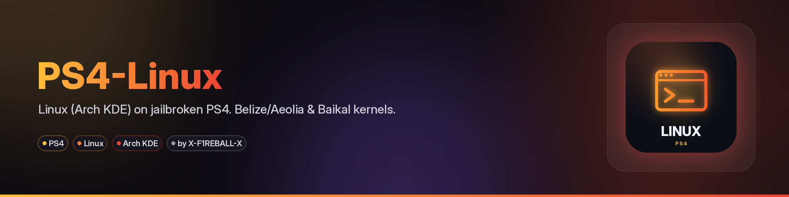
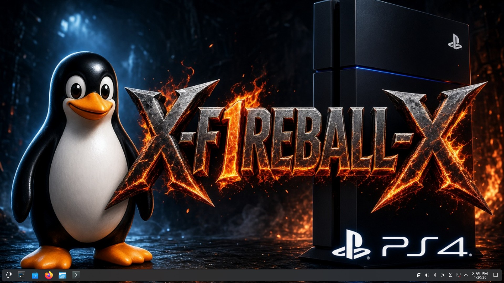

Run Linux from a USB drive on a jailbroken PS4. Tested setup, ready-to-use files. Works on CUH-7116B (Pro) and CUH-2116A (Slim) on FW 13.52 with GoldHEN. The loader supports FW 5.05-13.52.

2121 and a payload loader).| Model | Type | Southbridge | Kernel | Status |
|---|---|---|---|---|
| CUH-10xx, CUH-11xx | Fat | Aeolia | bzImage-belize-7.1.7 | Untested |
| CUH-12xx | Fat | Belize | bzImage-belize-7.1.7 | Untested |
| CUH-2116A | Slim | Baikal | bzImage-baikal-7.0.8 | Works (FW 13.52, GoldHEN) |
| Other CUH-2xxx | Slim | Depends on the motherboard | Belize or Baikal | Untested |
| CUH-70xx | Pro | Belize | bzImage-belize-7.1.7 | Untested |
| CUH-7116B | Pro | Belize | bzImage-belize-7.1.7 | Works (FW 13.52, GoldHEN) |
| Other CUH-7xxx | Pro | Depends on the motherboard | Belize or Baikal | Untested |
Not sure? If the Belize kernel gets a white light every time, use the Baikal kernel. Some Fat models have Wi-Fi and Bluetooth chips that may not work.
psxitarch-usb.img.xz.part1 and psxitarch-usb.img.xz.part2 from the release (a ready-made Arch Linux KDE USB image, xz-compressed, split in 2 parts) and write-img.ps1.cmd /c copy /b psxitarch-usb.img.xz.part1 + psxitarch-usb.img.xz.part2 psxitarch-usb.img.xzcat psxitarch-usb.img.xz.part1 psxitarch-usb.img.xz.part2 > psxitarch-usb.img.xzGet-Disk to find the USB number (not your PC disk), then: .\write-img.ps1 -ImagePath .\psxitarch-usb.img.xz -DiskNumber <N>.img with 7-Zip and use balenaEtcher or Rufus (DD mode). If Windows asks to format the stick, click Cancel.2121./data/linux/boot/./data/linux/boot/bzImage.initramfs.cpio.gz to /data/linux/boot/initramfs.cpio.gz.Do not put a file named bzImage on the USB: the loader prefers a USB kernel, so leave it off and one USB works on every console.
linux-1024mb.elf to the loader: nc -q 1 <PS4-IP> 9020 < linux-1024mb.elfAfter a reboot you are back on the PS4. Jailbreak and send the payload again. The USB can stay plugged in.
| File | VRAM | Use |
|---|---|---|
linux-32mb.elf to linux-512mb.elf | 32-512MB | No desktop. Server only. |
linux-1024mb.elf | 1GB | Use this for the desktop. Tested on Pro and Slim. |
linux-2048mb.elf | 2GB | More graphics memory. |
linux-3072mb.elf | 3GB | Not tested. |
linux-4096mb.elf | 4GB | Tested on Pro (FW 13.52). Leaves about 4GB RAM. |
Only from Linux running on the PS4. Grow only the partition labeled psxitarch (partition 2 of the USB stick); never touch the console's internal disk. These are the usual commands (not run on the console):
lsblk -f
sudo parted /dev/sdX resizepart 2 100%
sudo resize2fs /dev/sdX2mounting LABEL=psxitarch failed: the USB was not detected. Plug it in and reboot.fail0verflow (original PS4 Linux port, ps4-kexec), rancido and PSXITA Team, eeply, valeryy, tihmstar, mircoho, codedwrench, crashniels (kernel patches), rmuxnet (Strawberry kernels, loader rework), ps4boot (original loader), ArabPixel (ps4-linux-loader, FW 12.5x/13.xx), PSXITA Team (Psxitarch v3 initramfs), Piotr Karbowski (better-initramfs), Erkkola (Arch KDE rootfs), centi07 and DionKill (Mesa packages), SiSTR0 (GoldHEN). Kernels, payloads and initramfs are unmodified and belong to their authors.